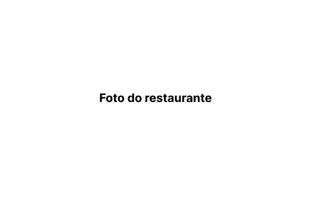

Hitória do restaurante:
Há 15 anos, o Sabores del Cielo nasceu com a missão de celebrar a rica tradição culinária do México, inspirada no Dia de los Muertos. Fundado por uma família apaixonada pelos sabores e pela cultura mexicana, o restaurante se tornou um refúgio para os amantes da autêntica cozinha mexicana, onde cada prato é preparado com receitas tradicionais e ingredientes frescos.
Ao longo dos anos, mantivemos viva a essência da culinária mexicana, oferecendo uma experiência única em um ambiente decorado com elementos do Dia de los Muertos. Aqui, honramos nossos antepassados e compartilhamos um pedacinho do céu através dos sabores que encantam nossos visitantes.
